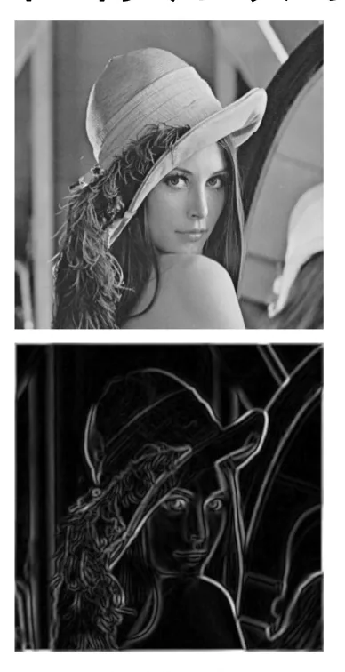
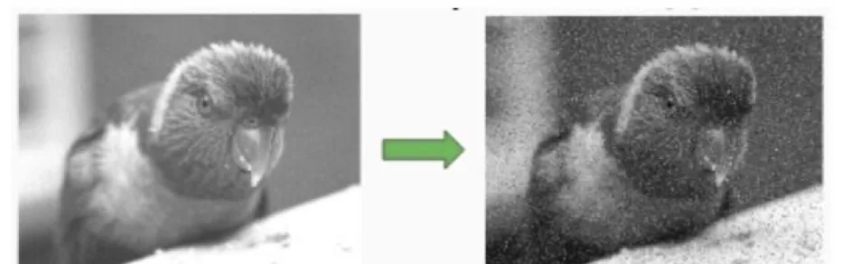
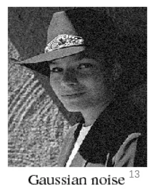
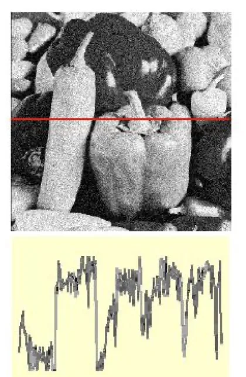
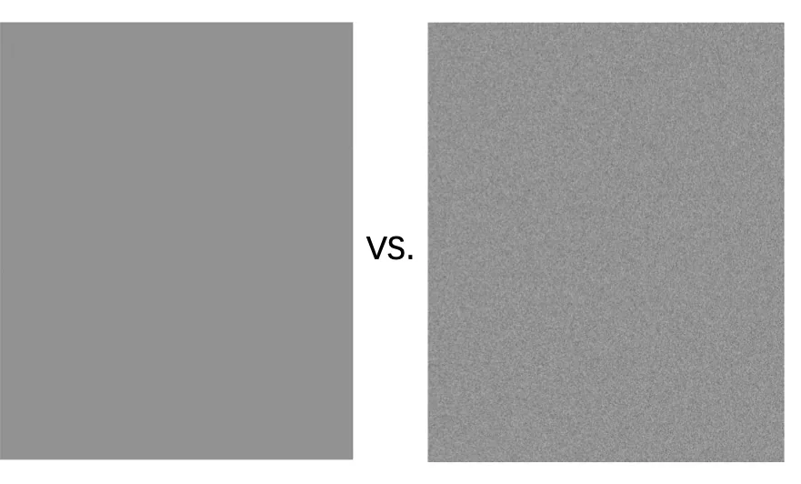
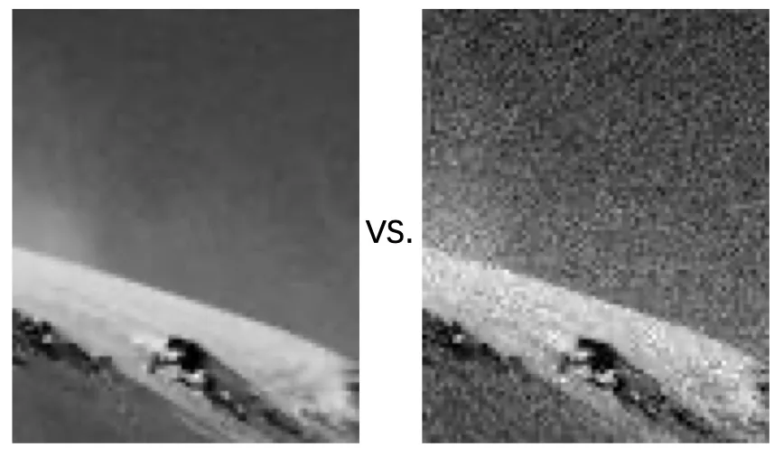

计算机视觉 · 第 2 章 图像处理基础
2.3 图像滤波与卷积的动机——图像噪声
前两节把图像看作离散的二维函数，从这一节起要开始处理它，而工具就是滤波与卷积。课件没有一上来就写卷积公式，而是先讲动机：滤波能做平滑、锐化、边缘检测、模板匹配这些事，但它们共同的对手是噪声。于是这一节围绕噪声展开——噪声从哪来、有哪几种、为什么用高斯分布刻画它，以及噪声强度变化时图像会怎样。
1. 滤波与卷积能做什么
先看动机的正面。滤波与卷积是图像处理里最基础的一类运算，课件把它能解决的问题归纳为三件事：平滑／锐化图像、边缘检测和模板匹配。
三者的目标差别很大：平滑是压掉图像中细微的起伏，让画面更干净；锐化正相反，是把这些起伏放大，让轮廓和纹理更清楚；边缘检测关心的是灰度发生剧烈变化的位置，输出的是边界本身；模板匹配则拿一小块图案到大图里去搜索它出现的位置。尽管目标各异，它们背后的手段是同一个——用一个小模板在图像上逐位置滑动，对每个位置的邻域做加权求和，再把结果写回输出图像。本章后面几节要展开的均值滤波、中值滤波、高斯滤波、互相关与卷积，都是这个手段的具体形态。

2. 降噪：滤波最直接的动机
理想情况下，像素的幅值只反映场景本身，但实际过程没有这么干净。在图像的产生、传输和复制过程中，常常会因为多方面原因被噪声干扰，图像质量因此下降，这就需要对图像做一定的处理，以减小这些缺陷带来的影响。这就是滤波最直接的动机：降噪。
噪声长什么样？它在图像上常表现为引起较强视觉效果的孤立像素点或者像素块——周围一片正常，偏偏它跳出来，眼睛很难忽略。落到数字图像上，噪声表现为或大或小的极值，这些极值通过加减作用在图像像素的真实灰度值上，于是造成亮、暗点的干扰。这里已经埋下了高斯噪声模型的雏形：噪声不是替换像素值，而是叠加到真实值上。
噪声的危害也不只是「不好看」。它降低了图像的视觉质量，还会影响图像复原、分割、特征提取、图像识别等后继工作的进行——这些任务全都建立在像素的取值之上，输入被污染，输出自然跟着偏。也正因为影响是向下游传播的，降噪通常被安排在整个处理流程的前端。

3. 常见的噪声类型
课件按噪声取值的形态，把常见噪声分成三类：
椒盐噪声 黑白像素的随机出现
脉冲噪声 白色像素的随机出现
高斯噪声 服从高斯分布的噪声
三者的区别可以顺着「取值落在哪里」来理解。椒盐噪声在图像上表现为黑白像素的随机出现，即最亮与最暗两种极值同时零星地出现，像撒上了椒盐；脉冲噪声只表现为白色像素的随机出现，是单侧的极值干扰；而高斯噪声不产生极值，它服从高斯分布，取值围绕真实灰度铺开，扰动的幅度有大有小，但出现过大的偏差的概率很小。
这个分类直接决定了后面去噪手段的选择：取值越极端、越偏离正常范围的噪声，越容易通过与邻域比较、排序的方式识别并去掉；取值越接近图像自身起伏的噪声，就越难与真实细节区分开，只能靠假设它的统计规律来做平滑。所以看清噪声属于哪一类，是选滤波器的第一步。

4. 高斯分布与高斯噪声模型
三类噪声里，高斯噪声被讨论得最多，因为它有成熟的数学模型。它建立在高斯分布（Gaussian distribution）之上，也叫正态分布（normal distribution），通常记作 𝑋~𝑁(𝜇, 𝜎²)：其中 𝜇 是正态分布的均值，𝜎² 是正态分布的方差；当 𝜇 = 0、𝜎² = 1 时，这个分布被称作标准正态分布。
正态分布的概率密度函数显示为典型的钟形曲线，而两个参数各管一件事：𝜇 描述分布的中心位置，也就是曲线对称轴所在的位置；𝜎² 描述随机变量相对于均值的偏离程度。换句话说，𝜇 决定噪声「围绕哪个值波动」，𝜎² 决定噪声「波动得有多厉害」。这一分工后面还会反复用到——图像处理里最关心的往往是 𝜎²，因为它就是噪声强弱的度量。
把噪声写进图像的模型，就是课件第 15 张给出的那条式子：观测到的图像等于理想图像叠加上一个噪声项。课件把这个噪声项取成服从高斯分布的形式，并且说明它是 i.i.d.（independent and identically distributed，独立同分布）的白噪声——不同像素上的噪声取值互不影响，而且都来自同一个分布。写成公式是：
f(x, y) = F(x, y) + m(x, y)
F(x, y) 理想图像
m(x, y) 噪声项，m(x, y) ~ N(μ, σ²)
这条式子值得多看一眼。它是一个加性模型：噪声被直接加到真实灰度值上，而不是替换或乘上去，与第 12 张所说的「极值通过加减作用于图像像素的真实灰度值上」正好对应。同时，正因为假设了噪声服从已知分布，才可能有针对性地设计滤波器——后面讲高斯滤波时，用到的正是这条假设。

模型里只剩噪声强度一个变量，所以课件用了两页图专门做同一组对比。一页看噪声本身：在 𝜎 = 1 与 𝜎 = 16 两种强度下，噪声图各自是什么样子；另一页看后果：把这两种噪声加到原始图像上，结果又有何不同。按第 14 张的解释，𝜎² 描述的是偏离均值的程度，因此 𝜎 越大，扰动的幅度分布得越开，图像被破坏得也就越明显。这组对比还提示了一件事：评价一个去噪方法的效果，不能脱离噪声强度来谈。


本节小结
- 滤波与卷积的三个典型用途是平滑／锐化图像、边缘检测与模板匹配，它们共用的手段是让一个小模板在图像上滑动，对每个位置的邻域做加权求和。
- 噪声来自图像的产生、传输和复制过程，在数字图像上表现为叠加到真实灰度值上的极值，形成孤立的亮、暗像素点或像素块；它降低视觉质量，并影响图像复原、分割、特征提取与图像识别等后继工作，因此降噪是滤波最直接的动机。
- 常见噪声分三类：椒盐噪声是黑白像素的随机出现，脉冲噪声是白色像素的随机出现，高斯噪声服从高斯分布。取值越极端越容易去掉，越接近真实起伏越难分离，这是选择滤波器的依据。
- 高斯分布也叫正态分布，记作 𝑋~𝑁(𝜇, 𝜎²)：𝜇 是均值、决定曲线的中心位置即对称轴，𝜎² 是方差、描述随机变量对均值的偏离程度；𝜇 = 0、𝜎² = 1 时称为标准正态分布。
- 高斯噪声用加性模型描述：f(x, y) = F(x, y) + m(x, y)，噪声项 m 是独立同分布的白噪声；𝜎 越大噪声越强，课件用「噪声图」与「加噪后的图像」两组 𝜎 = 1 与 𝜎 = 16 的对比展示了这一点，也为 2.4、2.5 节的各种平滑滤波提供了动机。